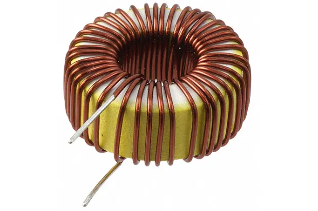

TELECOMUNICAZIONI
INTRODUZIONE GENERALE
Le telecomunicazioni sono il fulcro della connettività moderna, permettendo la trasmissione di informazioni a distanza attraverso segnali elettrici, ottici o radio. Questa disciplina studia le tecnologie e i sistemi che consentono la comunicazione tra persone e dispositivi, dalle reti telefoniche tradizionali alle più avanzate infrastrutture digitali che sostengono internet e le comunicazioni mobili. L'evoluzione del settore ha rivoluzionato il modo in cui interagiamo, lavoriamo e accediamo alle informazioni, rendendo il mondo sempre più interconnesso.
CENNI TEORICI
Le telecomunicazioni si basano sulla trasmissione e ricezione di segnali per permettere la comunicazione tra individui o dispositivi. Questo processo avviene attraverso vari mezzi, come onde elettromagnetiche, cavi o fibre ottiche. I principi fondamentali includono la modulazione, utilizzata per adattare i segnali alla trasmissione; la codifica, che protegge le informazioni da interferenze e perdite; e le tecniche di multiplexing, che consentono di inviare più segnali simultaneamente. Con l’evoluzione delle tecnologie, le telecomunicazioni hanno incorporato protocolli avanzati per garantire efficienza, sicurezza e velocità nella trasmissione dei dati.
LA PRATICA
La pratica delle telecomunicazioni coinvolge l'uso di dispositivi e tecnologie per la trasmissione di segnali, come antenne, trasmettitori e ricevitori. Gli esperimenti più comuni includono la configurazione di reti di comunicazione, la misurazione della qualità del segnale e l'analisi delle interferenze. Nei laboratori si testano protocolli di trasmissione, si simulano scenari reali di comunicazione e si applicano tecniche di modulazione e codifica per ottimizzare la trasmissione dei dati. L'apprendimento pratico permette di comprendere il funzionamento concreto delle infrastrutture e di sviluppare competenze utili per il settore.
PROGRAMMA
I SEGNALI
I segnali nelle telecomunicazioni rappresentano l'elemento fondamentale per la trasmissione delle informazioni da un punto all'altro. Possono essere analogici o digitali, a seconda del metodo di rappresentazione dei dati. I segnali analogici variano in modo continuo nel tempo e sono utilizzati, per esempio, nelle trasmissioni radio e televisive. I segnali digitali, invece, si basano su impulsi discreti che codificano l'informazione in forma binaria, rendendoli più resistenti alle interferenze e più facilmente elaborabili dai sistemi elettronici. La modulazione è una tecnica essenziale che permette di adattare i segnali alla trasmissione su diversi mezzi fisici, garantendo efficienza e affidabilità nella comunicazione. L’elaborazione e la gestione dei segnali sono cruciali per il funzionamento di tutti i sistemi di telecomunicazione moderni.
I CIRCUITI
I circuiti elettrici costituiscono la base di tutti i sistemi elettronici e di telecomunicazione, permettendo il trasferimento e la manipolazione dell’energia elettrica. Un circuito è composto da elementi come resistori, condensatori, induttori e dispositivi attivi come transistor e diodi, che regolano il flusso di corrente e tensione. La progettazione e l’analisi dei circuiti si basano su principi fondamentali della fisica, come le leggi di Ohm e di Kirchhoff, che descrivono il comportamento dell’elettricità all'interno di un sistema. Nei telecomunicazioni, i circuiti sono utilizzati per la generazione, amplificazione e trasmissione dei segnali, svolgendo un ruolo essenziale nell'efficienza e affidabilità della comunicazione. L’evoluzione tecnologica ha portato alla miniaturizzazione e integrazione dei circuiti, rendendoli sempre più sofisticati e performanti.
Teoremi
Le leggi di Kirchhoff sono principi fondamentali dell'analisi dei circuiti elettrici, utili per determinare correnti e tensioni in sistemi complessi. La prima legge, detta legge delle correnti, afferma che in un nodo la somma delle correnti entranti è uguale alla somma delle correnti uscenti, garantendo la conservazione della carica elettrica. La seconda legge, detta legge delle tensioni, stabilisce che la somma algebrica delle variazioni di tensione lungo un percorso chiuso in un circuito è sempre zero, assicurando il principio di conservazione dell’energia. Questi concetti sono essenziali per la progettazione e l’analisi di circuiti elettrici, permettendo di risolvere reti complesse e di comprendere il comportamento dei componenti elettronici.
Resistenze
Le resistenze sono componenti fondamentali nei circuiti elettrici e nelle telecomunicazioni, poiché regolano il flusso di corrente e proteggono i dispositivi da sovraccarichi. La loro funzione principale è quella di opporsi al passaggio della corrente elettrica, dissipando energia sotto forma di calore. Il valore di una resistenza si misura in ohm e segue la legge di Ohm, che stabilisce la relazione tra tensione, corrente e resistenza in un circuito. Nei sistemi di telecomunicazione, le resistenze vengono utilizzate per adattare i segnali, bilanciare le impedenze e garantire una trasmissione stabile ed efficiente. Esistono diversi tipi di resistenze, tra cui quelle fisse e variabili, che vengono impiegate in base alle esigenze del circuito. La loro corretta selezione e integrazione è essenziale per garantire il funzionamento ottimale dei dispositivi elettronici.
CONDENSATORI
I condensatori sono componenti essenziali nei circuiti elettrici e nelle telecomunicazioni, utilizzati per immagazzinare e rilasciare energia elettrica sotto forma di carica. Sono costituiti da due piastre conduttrici separate da un materiale isolante, chiamato dielettrico, che determina le loro proprietà. La capacità di un condensatore, misurata in farad, indica la quantità di carica che può accumulare per unità di tensione applicata. Nei sistemi di telecomunicazione, i condensatori svolgono funzioni chiave, come il filtraggio dei segnali, la stabilizzazione della tensione e la protezione dei circuiti da variazioni improvvise. Sono indispensabili per il corretto funzionamento delle reti di comunicazione e per migliorare l'efficienza dei dispositivi elettronici.
INDUTTORI

Gli induttori sono componenti elettrici che immagazzinano energia sotto forma di campo magnetico quando una corrente li attraversa. Sono costituiti da un avvolgimento di filo conduttore, spesso avvolto attorno a un nucleo di materiale ferromagnetico, che ne amplifica l’effetto. La loro principale caratteristica è l’induttanza, misurata in henry, che rappresenta la capacità di opporsi alle variazioni di corrente. Negli impianti di telecomunicazione, gli induttori sono utilizzati per filtrare segnali, ridurre le interferenze e stabilizzare l’alimentazione dei circuiti. Grazie alla loro capacità di regolare il flusso di energia elettrica, svolgono un ruolo essenziale nella progettazione di dispositivi elettronici e sistemi di comunicazione.
LABORATORIO
Il laboratorio di telecomunicazioni è uno spazio fondamentale per sperimentare e applicare concretamente i concetti teorici appresi. Qui si testano circuiti elettrici, si configurano reti di comunicazione e si analizzano segnali per comprenderne il comportamento e le eventuali interferenze. Attraverso l’uso di strumenti come oscilloscopi, generatori di segnali e analizzatori di spettro, si acquisisce esperienza pratica nel monitoraggio e nella gestione dei sistemi di telecomunicazione. Le attività di laboratorio permettono di simulare scenari reali, valutare la qualità della trasmissione e ottimizzare le prestazioni dei dispositivi, formando competenze essenziali per operare nel settore. L’approccio sperimentale favorisce la risoluzione di problemi tecnici e il perfezionamento delle metodologie di analisi e progettazione.